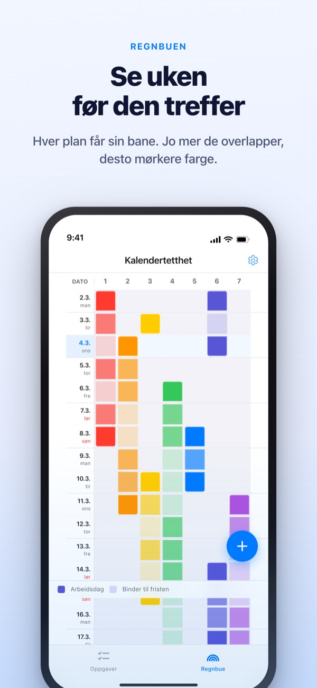
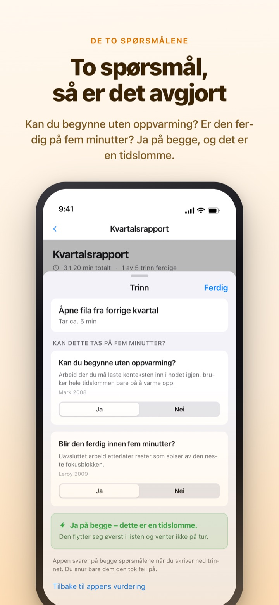
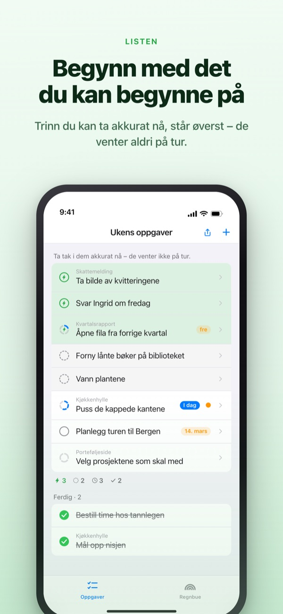
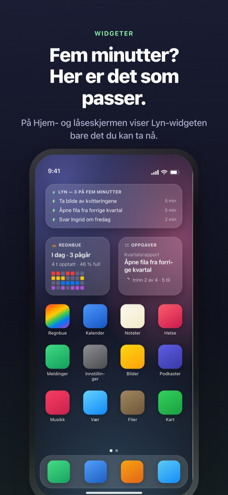

Se den travle uka komme.
Bruk de fem minuttene du får.
Jo mer oppgavene dine overlapper, jo dypere farge får regnbuen. Del en stor oppgave i trinn, så venter trinnet du rekker i en luke, allerede øverst.
Regnbuen, oppdeling av oppgaver, tidtakeren og synkronisering med Mac er gratis.

Prøv selv
«Kvartalsrapport Q3» er allerede delt i fem trinn. Velg et trinn, endre tiden eller snu et svar. Bare et trinn med ja på begge spørsmålene blir en tidslomme du rekker på fem minutter.
Ser kalenderen tom ut, men uka tar likevel pusten fra deg?
En kalender viser om noe er planlagt, ikke hvor mye som ligger oppå hverandre. At tre frister havner i samme uke, merker du ofte først midt i den, og de fem minuttene imellom går med til å lese gjennom gjøremålslista. Rainbow of Desire tegner uka som et rutenett, farger overlapp mørkere og legger trinnene til små luker til side.
To spørsmål, så er det avgjort
Når du deler en stor oppgave, får hvert trinn to spørsmål. Kan du begynne uten oppvarming? Blir den ferdig innen fem minutter?
Bare to ganger ja gir en tidslomme. Appen svarer først ut fra tid og ordlyd, og du snur bare et svar når det er feil.

Ledig luke? Se øverst
Sveip en oppgave mot høyre for å gi den et lyn, så hopper den over køen og står øverst. Du slipper å lese hele lista.
Om trinn venter på hverandre, bestemmer du én gang per gruppe. I rekkefølge viser første åpne trinn, Valgfri rekkefølge tidslommen du kan ta nå.

Synlig uten å åpne appen
Tidtakeren teller ned til hendelsen slutter, og tiden som er igjen vises også i Dynamic Island og på låseskjermen.
Widgeter for Hjem- og låseskjerm viser hva du holder på med, hva som passer på fem minutter, og ukas regnbue. (Widgeter er Pro)

I gang på tre trinn
- 1
Tegn en hendelse
Hold på et tomt felt på startdagen og trykk på sluttdagen. Da står det en strek i regnbuen.
- 2
Del opp store oppgaver
Trykk på en oppgave, skriv trinnene og velg tid. De to spørsmålene svarer appen på først.
- 3
Se øverst når det er luke
Tidslommer og oppgaver med lyn samles øverst uten å vente på tur.
Det du møter på skjermen
- Mørkt felt · lyst felt
- dager du faktisk jobber med det, og resten fram til sluttdatoen
- En full rad
- en dag med så mye samtidig at én forsinkelse skyver hele dagen
- Tidslomme
- ja på begge spørsmål; ta den når du har fem minutter
- Kort fokusblokk
- ingen oppvarming, men blir ikke ferdig i en tidslomme; gjøres i ett strekk
- Fokusblokk
- trenger oppvarming eller tar 45 minutter eller mer; legg den i holdt av tid
- Lyn
- ditt eget «klar nå»-merke; hopper til toppen
- I rekkefølge · Valgfri rekkefølge
- om trinn venter på hverandre, valgt én gang per gruppe
- Tidsregnskap
- ukas oppgjør: det som gjenstår, vunnet tid og hvile, holdt hver for seg og aldri lagt sammen
Tid summeres nedenfra: en oppgaves tid er summen av trinnene.
Det du trenger i dag, er gratis
Gratis
- Regnbuen (rutenett over hvor travelt det er)
- Oppdeling i trinn og de to spørsmålene
- Lyn og rekkefølge for trinn
- Tidtaker i Dynamic Island og på låseskjermen
- Synkronisering med Rainbow Craft på Mac via iCloud
- Tidsregnskap for de siste to ukene
Rainbow Plus · Rainbow Pro
- Plus: hendelsesstatistikk og tidsregnskap lenger tilbake enn to uker
- Pro: alt i Plus og widgeter for Hjem- og låseskjerm
- Pro: import fra Kalender som alltid vises
- Pro: deling av hendelser, bare visning
- Pro: låser også opp Rainbow Craft Pro på Mac
Hver som årsabonnement eller engangskjøp for alltid
Du betaler bare for å se tilbake på tidligere uker og for å ta ting ut av appen. Har du kjøpt Pro før eller har månedsabonnement, er du fortsatt Pro.
Spørsmål og svar
Trenger jeg konto eller iCloud?
Ikke når du bruker den alene. Det er ingen registrering, og alt blir på enheten. For andre enheter, Mac-appen eller deling logger du på iCloud.
Appen svarte feil på et spørsmål.
Trykk på trinnet og bytt mellom Ja og Nei. Ditt eget svar går alltid foran. Trykk «Tilbake til appens vurdering» for å gi det fra deg igjen. Et trinn uten tid regnes ikke som tidslomme, fordi appen ikke vet om det blir ferdig på fem minutter.
Kan jeg dele med andre?
Med en invitasjonslenke deler du hendelsene dine med bare visning (Pro), eller åpner en gjøremålsliste som du og de inviterte leser og skriver i sammen. Alle med lenken kan bli med, så send den bare til dem du mener. Det har ingenting med Apples Familiedeling å gjøre.
Vises kalenderhendelsene mine?
Hendelser fra kalenderne du velger, vises i regnbuen og i dagsvisningen (Pro). Appen leser bare og skriver ingenting tilbake.
Kan jeg krysse av i en widget?
Widgeter er bare for visning. Trykk på en, så åpnes oppgavene direkte, og kryss av der.
Må Mac-appen kjøpes separat?
Rainbow Craft er en egen macOS-app i Mac App Store. På samme iCloud-konto synkroniseres oppgaver og ukeplaner av seg selv, og det koster ingenting.
Er de eldre oppgavene mine der fortsatt?
Ja. Oppgaver, trinn og tidene du har satt, beholdes. Merker fra de gamle startbetingelsene vurderer appen på nytt med de to spørsmålene.
Hvor lagres dataene mine?
Det finnes ingen server. Alt ligger på enheten og i din egen iCloud, der utvikleren ikke ser det. Ingen reklame-ID, ingen posisjon. Appen sender bare anonym bruksstatistikk som ikke kan spores til deg, og som kan slås av i Innstillinger.
Hvordan sier jeg opp et abonnement?
I Innstillinger > Apple-konto > Abonnementer. Det fornyes til samme pris med mindre du sier opp senest 24 timer før perioden er slutt. For alltid er en engangsbetaling.
Står du fast, eller virker noe rart? Skriv til leeo@kakao.com. Du finner også et kontaktvalg i innstillingene i appen.